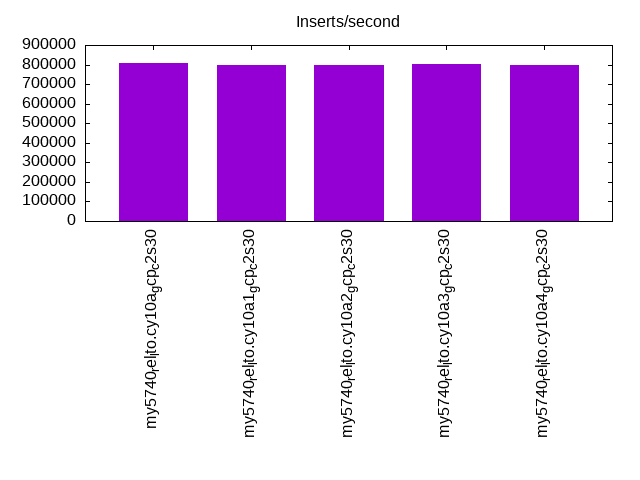
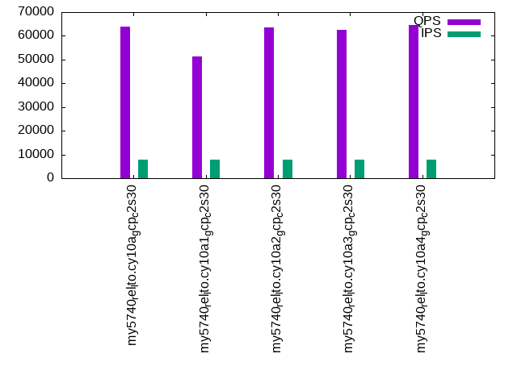

Introduction
This is a report for the insert benchmark with 160M docs and 8 client(s). It is generated by scripts (bash, awk, sed) and Tufte might not be impressed. An overview of the insert benchmark is here and a short update is here. Below, by DBMS, I mean DBMS+version.config. An example is my8020.c10b40 where my means MySQL, 8020 is version 8.0.20 and c10b40 is the name for the configuration file.
The test server is a c2-standard-30 from GCP with 15 cores, hyperthreads disabled, 120G RAM, XFS + SW RAID 0 on 4 NVMe devices (1.5TB). The benchmark was run with 8 client and there were 1 or 3 connections per client (1 for queries or inserts without rate limits, 1+1 for rate limited inserts+deletes). There are 8 tables, client per table. It loads 160M rows without secondary indexes, creates secondary indexes, then inserts 800M rows with a delete per insert to avoid growing the table. It then does 3 read+write tests for 1800s each that do queries as fast as possible with 100, 500 and then 1000 inserts/second/client concurrent with the queries and 1000 deletes/second to avoid growing the table. The database is cached by InnoDB and the only IO is for writes.
The tested DBMS are:
- my5740_rel_lto.cy10a_gcp_c2s30 - InnoDB and MySQL 5.7.40, rel_lto build, cy10a_gcp_c2s30 config, compiled with CMAKE_BUILD_TYPE=Release -O2, base config
- my5740_rel_lto.cy10a1_gcp_c2s30 - InnoDB and MySQL 5.7.40, rel_lto build, cy10a_gcp_c2s30 config, compiled with CMAKE_BUILD_TYPE=Release -O2, adds innodb_use_native_aio=off
- my5740_rel_lto.cy10a2_gcp_c2s30 - InnoDB and MySQL 5.7.40, rel_lto build, cy10a_gcp_c2s30 config, compiled with CMAKE_BUILD_TYPE=Release -O2, adds innodb_io_capacity=20k, innodb_io_capacity_max=40k
- my5740_rel_lto.cy10a3_gcp_c2s30 - InnoDB and MySQL 5.7.40, rel_lto build, cy10a_gcp_c2s30 config, compiled with CMAKE_BUILD_TYPE=Release -O2, adds innodb_io_capacity=20k, innodb_io_capacity_max=40k, innodb_flush_sync=OFF
- my5740_rel_lto.cy10a4_gcp_c2s30 - InnoDB and MySQL 5.7.40, rel_lto build, cy10a_gcp_c2s30 config, compiled with CMAKE_BUILD_TYPE=Release -O2, adds innodb_flush_method=fsync
Contents
- Summary
- l.i0: load without secondary indexes
- l.x: create secondary indexes
- l.i1: continue load after secondary indexes created
- q100.1: range queries with 100 insert/s per client
- q500.1: range queries with 500 insert/s per client
- q1000.1: range queries with 1000 insert/s per client
Summary
The numbers are inserts/s for l.i0 and l.i1, indexed docs (or rows) /s for l.x and queries/s for q*.2. The values are the average rate over the entire test for inserts (IPS) and queries (QPS). The range of values for IPS and QPS is split into 3 parts: bottom 25%, middle 50%, top 25%. Values in the bottom 25% have a red background, values in the top 25% have a green background and values in the middle have no color. A gray background is used for values that can be ignored because the DBMS did not sustain the target insert rate. Red backgrounds are not used when the minimum value is within 80% of the max value.
| dbms | l.i0 | l.x | l.i1 | q100.1 | q500.1 | q1000.1 |
|---|---|---|---|---|---|---|
| my5740_rel_lto.cy10a_gcp_c2s30 | 808081 | 1194776 | 139519 | 53059 | 56220 | 63902 |
| my5740_rel_lto.cy10a1_gcp_c2s30 | 796020 | 1177206 | 140449 | 45383 | 49240 | 51420 |
| my5740_rel_lto.cy10a2_gcp_c2s30 | 800000 | 1270635 | 137717 | 52964 | 55932 | 63449 |
| my5740_rel_lto.cy10a3_gcp_c2s30 | 804020 | 1270635 | 137221 | 53114 | 55418 | 62525 |
| my5740_rel_lto.cy10a4_gcp_c2s30 | 800000 | 1046405 | 131406 | 51872 | 54827 | 64620 |
This table has relative throughput, throughput for the DBMS relative to the DBMS in the first line, using the absolute throughput from the previous table. Values less than 0.95 have a yellow background. Values greater than 1.05 have a blue background.
| dbms | l.i0 | l.x | l.i1 | q100.1 | q500.1 | q1000.1 |
|---|---|---|---|---|---|---|
| my5740_rel_lto.cy10a_gcp_c2s30 | 1.00 | 1.00 | 1.00 | 1.00 | 1.00 | 1.00 |
| my5740_rel_lto.cy10a1_gcp_c2s30 | 0.99 | 0.99 | 1.01 | 0.86 | 0.88 | 0.80 |
| my5740_rel_lto.cy10a2_gcp_c2s30 | 0.99 | 1.06 | 0.99 | 1.00 | 0.99 | 0.99 |
| my5740_rel_lto.cy10a3_gcp_c2s30 | 0.99 | 1.06 | 0.98 | 1.00 | 0.99 | 0.98 |
| my5740_rel_lto.cy10a4_gcp_c2s30 | 0.99 | 0.88 | 0.94 | 0.98 | 0.98 | 1.01 |
This lists the average rate of inserts/s for the tests that do inserts concurrent with queries. For such tests the query rate is listed in the table above. The read+write tests are setup so that the insert rate should match the target rate every second. Cells that are not at least 95% of the target have a red background to indicate a failure to satisfy the target.
| dbms | q100.1 | q500.1 | q1000.1 |
|---|---|---|---|
| my5740_rel_lto.cy10a_gcp_c2s30 | 783 | 3967 | 7956 |
| my5740_rel_lto.cy10a1_gcp_c2s30 | 741 | 3785 | 7725 |
| my5740_rel_lto.cy10a2_gcp_c2s30 | 786 | 3967 | 7956 |
| my5740_rel_lto.cy10a3_gcp_c2s30 | 785 | 3965 | 7960 |
| my5740_rel_lto.cy10a4_gcp_c2s30 | 765 | 3965 | 7960 |
| target | 800 | 4000 | 8000 |
l.i0
l.i0: load without secondary indexes. Graphs for performance per 1-second interval are here.
Average throughput:
Insert response time histogram: each cell has the percentage of responses that take <= the time in the header and max is the max response time in seconds. For the max column values in the top 25% of the range have a red background and in the bottom 25% of the range have a green background. The red background is not used when the min value is within 80% of the max value.
| dbms | 256us | 1ms | 4ms | 16ms | 64ms | 256ms | 1s | 4s | 16s | gt | max |
|---|---|---|---|---|---|---|---|---|---|---|---|
| my5740_rel_lto.cy10a_gcp_c2s30 | 97.481 | 2.458 | 0.033 | 0.012 | 0.015 | 0.238 | |||||
| my5740_rel_lto.cy10a1_gcp_c2s30 | 96.085 | 3.846 | 0.040 | 0.014 | 0.015 | 0.248 | |||||
| my5740_rel_lto.cy10a2_gcp_c2s30 | 96.366 | 3.571 | 0.037 | 0.013 | 0.014 | nonzero | 0.256 | ||||
| my5740_rel_lto.cy10a3_gcp_c2s30 | 96.686 | 3.241 | 0.041 | 0.015 | 0.017 | 0.234 | |||||
| my5740_rel_lto.cy10a4_gcp_c2s30 | 96.658 | 3.099 | 0.208 | 0.021 | 0.014 | 0.249 |
Performance metrics for the DBMS listed above. Some are normalized by throughput, others are not. Legend for results is here.
ips qps rps rmbps wps wmbps rpq rkbpq wpi wkbpi csps cpups cspq cpupq dbgb1 dbgb2 rss maxop p50 p99 tag 808081 0 0 0.0 1486.7 156.7 0.000 0.000 0.002 0.199 80587 69.7 0.100 13 10.6 139.1 17.2 0.238 112878 86207 160m.my5740_rel_lto.cy10a_gcp_c2s30 796020 0 0 0.0 1466.7 153.1 0.000 0.000 0.002 0.197 80648 69.4 0.101 13 10.6 139.1 17.2 0.248 110080 82511 160m.my5740_rel_lto.cy10a1_gcp_c2s30 800000 0 0 0.0 1544.2 155.9 0.000 0.000 0.002 0.200 79085 69.2 0.099 13 10.6 139.1 17.2 0.256 110581 82611 160m.my5740_rel_lto.cy10a2_gcp_c2s30 804020 0 0 0.0 1523.8 156.5 0.000 0.000 0.002 0.199 79931 69.8 0.099 13 10.6 139.1 17.2 0.234 110919 76318 160m.my5740_rel_lto.cy10a3_gcp_c2s30 800000 0 0 0.0 586.7 154.1 0.000 0.000 0.001 0.197 81289 69.9 0.102 13 10.6 139.1 17.2 0.249 111680 84608 160m.my5740_rel_lto.cy10a4_gcp_c2s30
l.x
l.x: create secondary indexes.
Average throughput:
Performance metrics for the DBMS listed above. Some are normalized by throughput, others are not. Legend for results is here.
ips qps rps rmbps wps wmbps rpq rkbpq wpi wkbpi csps cpups cspq cpupq dbgb1 dbgb2 rss maxop p50 p99 tag 1194776 0 0 0.0 14503.2 1069.3 0.000 0.000 0.012 0.916 47853 35.9 0.040 5 23.6 152.1 28.6 0.030 NA NA 160m.my5740_rel_lto.cy10a_gcp_c2s30 1177206 0 0 0.0 13970.4 1063.1 0.000 0.000 0.012 0.925 84025 37.3 0.071 5 23.6 152.1 28.6 0.030 NA NA 160m.my5740_rel_lto.cy10a1_gcp_c2s30 1270635 0 0 0.0 14336.7 1146.3 0.000 0.000 0.011 0.924 36946 35.7 0.029 4 23.6 152.1 28.6 0.030 NA NA 160m.my5740_rel_lto.cy10a2_gcp_c2s30 1270635 0 0 0.0 14332.8 1147.4 0.000 0.000 0.011 0.925 38145 35.6 0.030 4 23.6 152.1 28.6 0.030 NA NA 160m.my5740_rel_lto.cy10a3_gcp_c2s30 1046405 0 0 0.0 3825.7 925.8 0.000 0.000 0.004 0.906 48724 31.9 0.047 5 23.6 152.1 28.6 0.030 NA NA 160m.my5740_rel_lto.cy10a4_gcp_c2s30
l.i1
l.i1: continue load after secondary indexes created. Graphs for performance per 1-second interval are here.
Average throughput:
Insert response time histogram: each cell has the percentage of responses that take <= the time in the header and max is the max response time in seconds. For the max column values in the top 25% of the range have a red background and in the bottom 25% of the range have a green background. The red background is not used when the min value is within 80% of the max value.
| dbms | 256us | 1ms | 4ms | 16ms | 64ms | 256ms | 1s | 4s | 16s | gt | max |
|---|---|---|---|---|---|---|---|---|---|---|---|
| my5740_rel_lto.cy10a_gcp_c2s30 | 89.927 | 10.006 | 0.051 | 0.016 | nonzero | 0.492 | |||||
| my5740_rel_lto.cy10a1_gcp_c2s30 | 91.415 | 8.525 | 0.045 | 0.016 | 0.242 | ||||||
| my5740_rel_lto.cy10a2_gcp_c2s30 | 89.200 | 10.748 | 0.036 | 0.015 | nonzero | 0.526 | |||||
| my5740_rel_lto.cy10a3_gcp_c2s30 | nonzero | 89.048 | 10.893 | 0.044 | 0.016 | nonzero | 0.529 | ||||
| my5740_rel_lto.cy10a4_gcp_c2s30 | 85.181 | 14.711 | 0.085 | 0.022 | nonzero | 0.370 |
Delete response time histogram: each cell has the percentage of responses that take <= the time in the header and max is the max response time in seconds. For the max column values in the top 25% of the range have a red background and in the bottom 25% of the range have a green background. The red background is not used when the min value is within 80% of the max value.
| dbms | 256us | 1ms | 4ms | 16ms | 64ms | 256ms | 1s | 4s | 16s | gt | max |
|---|---|---|---|---|---|---|---|---|---|---|---|
| my5740_rel_lto.cy10a_gcp_c2s30 | nonzero | 88.750 | 11.177 | 0.056 | 0.016 | nonzero | 0.494 | ||||
| my5740_rel_lto.cy10a1_gcp_c2s30 | nonzero | 91.211 | 8.723 | 0.051 | 0.015 | 0.240 | |||||
| my5740_rel_lto.cy10a2_gcp_c2s30 | nonzero | 88.258 | 11.684 | 0.042 | 0.016 | nonzero | 0.264 | ||||
| my5740_rel_lto.cy10a3_gcp_c2s30 | 0.001 | 88.088 | 11.847 | 0.047 | 0.016 | 0.001 | 0.531 | ||||
| my5740_rel_lto.cy10a4_gcp_c2s30 | 0.031 | 88.743 | 11.155 | 0.052 | 0.019 | nonzero | 0.296 |
Performance metrics for the DBMS listed above. Some are normalized by throughput, others are not. Legend for results is here.
ips qps rps rmbps wps wmbps rpq rkbpq wpi wkbpi csps cpups cspq cpupq dbgb1 dbgb2 rss maxop p50 p99 tag 139519 0 293 4.6 7157.8 276.7 0.002 0.034 0.051 2.031 56189 87.2 0.403 94 93.7 251.4 86.9 0.492 17681 13633 160m.my5740_rel_lto.cy10a_gcp_c2s30 140449 0 437 6.8 8137.9 313.5 0.003 0.050 0.058 2.286 68994 86.7 0.491 93 135.1 304.0 87.0 0.242 17787 13935 160m.my5740_rel_lto.cy10a1_gcp_c2s30 137717 0 294 4.6 8799.2 325.6 0.002 0.034 0.064 2.421 58399 87.1 0.424 95 94.0 251.9 87.0 0.526 17381 13540 160m.my5740_rel_lto.cy10a2_gcp_c2s30 137221 0 299 4.7 8713.4 322.8 0.002 0.035 0.063 2.409 58849 86.9 0.429 95 94.4 252.6 87.0 0.529 17381 13335 160m.my5740_rel_lto.cy10a3_gcp_c2s30 131406 0 34 5.4 5976.1 252.0 0.000 0.042 0.045 1.964 54881 84.5 0.418 96 94.1 252.0 86.9 0.370 16732 10838 160m.my5740_rel_lto.cy10a4_gcp_c2s30
q100.1
q100.1: range queries with 100 insert/s per client. Graphs for performance per 1-second interval are here.
Average throughput:

Query response time histogram: each cell has the percentage of responses that take <= the time in the header and max is the max response time in seconds. For max values in the top 25% of the range have a red background and in the bottom 25% of the range have a green background. The red background is not used when the min value is within 80% of the max value.
| dbms | 256us | 1ms | 4ms | 16ms | 64ms | 256ms | 1s | 4s | 16s | gt | max |
|---|---|---|---|---|---|---|---|---|---|---|---|
| my5740_rel_lto.cy10a_gcp_c2s30 | 99.614 | 0.376 | 0.009 | nonzero | nonzero | nonzero | 0.083 | ||||
| my5740_rel_lto.cy10a1_gcp_c2s30 | 98.639 | 1.249 | 0.111 | 0.001 | nonzero | nonzero | 0.188 | ||||
| my5740_rel_lto.cy10a2_gcp_c2s30 | 99.588 | 0.401 | 0.011 | nonzero | nonzero | nonzero | 0.081 | ||||
| my5740_rel_lto.cy10a3_gcp_c2s30 | 99.594 | 0.394 | 0.011 | 0.001 | nonzero | nonzero | 0.086 | ||||
| my5740_rel_lto.cy10a4_gcp_c2s30 | 99.576 | 0.361 | 0.054 | 0.007 | 0.002 | 0.001 | nonzero | nonzero | 2.009 |
Insert response time histogram: each cell has the percentage of responses that take <= the time in the header and max is the max response time in seconds. For max values in the top 25% of the range have a red background and in the bottom 25% of the range have a green background. The red background is not used when the min value is within 80% of the max value.
| dbms | 256us | 1ms | 4ms | 16ms | 64ms | 256ms | 1s | 4s | 16s | gt | max |
|---|---|---|---|---|---|---|---|---|---|---|---|
| my5740_rel_lto.cy10a_gcp_c2s30 | 94.542 | 5.406 | 0.052 | 0.026 | |||||||
| my5740_rel_lto.cy10a1_gcp_c2s30 | 93.535 | 6.372 | 0.090 | 0.003 | 0.065 | ||||||
| my5740_rel_lto.cy10a2_gcp_c2s30 | 95.750 | 4.215 | 0.035 | 0.023 | |||||||
| my5740_rel_lto.cy10a3_gcp_c2s30 | 94.924 | 5.031 | 0.045 | 0.022 | |||||||
| my5740_rel_lto.cy10a4_gcp_c2s30 | 88.271 | 11.062 | 0.510 | 0.135 | 0.021 | 0.363 |
Delete response time histogram: each cell has the percentage of responses that take <= the time in the header and max is the max response time in seconds. For max values in the top 25% of the range have a red background and in the bottom 25% of the range have a green background. The red background is not used when the min value is within 80% of the max value.
| dbms | 256us | 1ms | 4ms | 16ms | 64ms | 256ms | 1s | 4s | 16s | gt | max |
|---|---|---|---|---|---|---|---|---|---|---|---|
| my5740_rel_lto.cy10a_gcp_c2s30 | 95.677 | 4.274 | 0.049 | 0.047 | |||||||
| my5740_rel_lto.cy10a1_gcp_c2s30 | 97.587 | 2.354 | 0.059 | 0.032 | |||||||
| my5740_rel_lto.cy10a2_gcp_c2s30 | 96.306 | 3.670 | 0.024 | 0.023 | |||||||
| my5740_rel_lto.cy10a3_gcp_c2s30 | 95.431 | 4.538 | 0.031 | 0.022 | |||||||
| my5740_rel_lto.cy10a4_gcp_c2s30 | 0.010 | 90.934 | 8.649 | 0.337 | 0.066 | 0.003 | 0.270 |
Performance metrics for the DBMS listed above. Some are normalized by throughput, others are not. Legend for results is here.
ips qps rps rmbps wps wmbps rpq rkbpq wpi wkbpi csps cpups cspq cpupq dbgb1 dbgb2 rss maxop p50 p99 tag 783 53059 1527 23.9 3558.4 108.9 0.029 0.460 4.545 142.467 181462 71.5 3.420 202 93.7 251.4 86.9 0.083 6777 6507 160m.my5740_rel_lto.cy10a_gcp_c2s30 741 45383 2678 41.8 8247.1 233.9 0.059 0.944 11.128 323.242 181292 66.7 3.995 220 135.1 304.1 86.9 0.188 6249 1822 160m.my5740_rel_lto.cy10a1_gcp_c2s30 786 52964 1547 24.2 3611.1 112.6 0.029 0.467 4.592 146.565 181219 71.5 3.422 202 94.0 251.9 86.9 0.081 6729 6459 160m.my5740_rel_lto.cy10a2_gcp_c2s30 785 53114 1591 24.9 3638.5 112.6 0.030 0.479 4.634 146.927 179960 72.0 3.388 203 94.4 252.6 86.9 0.086 6777 6521 160m.my5740_rel_lto.cy10a3_gcp_c2s30 765 51872 181 26.9 3286.2 108.3 0.003 0.531 4.297 145.088 173359 71.3 3.342 206 94.1 252.0 86.9 2.009 6777 4076 160m.my5740_rel_lto.cy10a4_gcp_c2s30
q500.1
q500.1: range queries with 500 insert/s per client. Graphs for performance per 1-second interval are here.
Average throughput:
Query response time histogram: each cell has the percentage of responses that take <= the time in the header and max is the max response time in seconds. For max values in the top 25% of the range have a red background and in the bottom 25% of the range have a green background. The red background is not used when the min value is within 80% of the max value.
| dbms | 256us | 1ms | 4ms | 16ms | 64ms | 256ms | 1s | 4s | 16s | gt | max |
|---|---|---|---|---|---|---|---|---|---|---|---|
| my5740_rel_lto.cy10a_gcp_c2s30 | 99.701 | 0.284 | 0.014 | 0.001 | nonzero | nonzero | 0.108 | ||||
| my5740_rel_lto.cy10a1_gcp_c2s30 | 99.447 | 0.538 | 0.013 | 0.002 | nonzero | nonzero | 0.081 | ||||
| my5740_rel_lto.cy10a2_gcp_c2s30 | 99.686 | 0.298 | 0.015 | 0.001 | nonzero | nonzero | 0.084 | ||||
| my5740_rel_lto.cy10a3_gcp_c2s30 | 99.655 | 0.328 | 0.016 | 0.001 | nonzero | 0.039 | |||||
| my5740_rel_lto.cy10a4_gcp_c2s30 | 99.657 | 0.312 | 0.028 | 0.003 | nonzero | nonzero | 0.091 |
Insert response time histogram: each cell has the percentage of responses that take <= the time in the header and max is the max response time in seconds. For max values in the top 25% of the range have a red background and in the bottom 25% of the range have a green background. The red background is not used when the min value is within 80% of the max value.
| dbms | 256us | 1ms | 4ms | 16ms | 64ms | 256ms | 1s | 4s | 16s | gt | max |
|---|---|---|---|---|---|---|---|---|---|---|---|
| my5740_rel_lto.cy10a_gcp_c2s30 | 95.542 | 4.438 | 0.020 | 0.030 | |||||||
| my5740_rel_lto.cy10a1_gcp_c2s30 | 96.222 | 3.710 | 0.068 | 0.040 | |||||||
| my5740_rel_lto.cy10a2_gcp_c2s30 | 94.293 | 5.658 | 0.047 | 0.001 | 0.087 | ||||||
| my5740_rel_lto.cy10a3_gcp_c2s30 | 96.848 | 3.138 | 0.015 | 0.038 | |||||||
| my5740_rel_lto.cy10a4_gcp_c2s30 | 92.628 | 7.185 | 0.184 | 0.002 | 0.114 |
Delete response time histogram: each cell has the percentage of responses that take <= the time in the header and max is the max response time in seconds. For max values in the top 25% of the range have a red background and in the bottom 25% of the range have a green background. The red background is not used when the min value is within 80% of the max value.
| dbms | 256us | 1ms | 4ms | 16ms | 64ms | 256ms | 1s | 4s | 16s | gt | max |
|---|---|---|---|---|---|---|---|---|---|---|---|
| my5740_rel_lto.cy10a_gcp_c2s30 | 0.054 | 97.059 | 2.872 | 0.015 | 0.048 | ||||||
| my5740_rel_lto.cy10a1_gcp_c2s30 | 97.989 | 1.986 | 0.025 | 0.036 | |||||||
| my5740_rel_lto.cy10a2_gcp_c2s30 | 0.040 | 96.330 | 3.597 | 0.033 | 0.001 | 0.091 | |||||
| my5740_rel_lto.cy10a3_gcp_c2s30 | 0.047 | 98.456 | 1.487 | 0.010 | 0.037 | ||||||
| my5740_rel_lto.cy10a4_gcp_c2s30 | 0.174 | 97.090 | 2.676 | 0.060 | 0.057 |
Performance metrics for the DBMS listed above. Some are normalized by throughput, others are not. Legend for results is here.
ips qps rps rmbps wps wmbps rpq rkbpq wpi wkbpi csps cpups cspq cpupq dbgb1 dbgb2 rss maxop p50 p99 tag 3967 56220 999 15.6 3949.9 130.7 0.018 0.284 0.996 33.737 178196 74.2 3.170 198 93.7 251.4 86.9 0.108 7080 6651 160m.my5740_rel_lto.cy10a_gcp_c2s30 3785 49240 1643 25.7 3806.8 108.7 0.033 0.534 1.006 29.413 180799 69.5 3.672 212 135.1 304.1 86.9 0.081 6537 6057 160m.my5740_rel_lto.cy10a1_gcp_c2s30 3967 55932 1007 15.7 4346.3 142.8 0.018 0.288 1.096 36.849 177895 74.2 3.181 199 94.0 251.9 86.9 0.084 7080 6665 160m.my5740_rel_lto.cy10a2_gcp_c2s30 3965 55418 984 15.4 4273.2 140.0 0.018 0.284 1.078 36.159 181803 73.1 3.281 198 94.4 252.6 86.9 0.039 6968 6617 160m.my5740_rel_lto.cy10a3_gcp_c2s30 3965 54827 92 12.2 3602.7 125.5 0.002 0.228 0.909 32.408 178224 74.4 3.251 204 94.1 252.0 86.9 0.091 6904 6505 160m.my5740_rel_lto.cy10a4_gcp_c2s30
q1000.1
q1000.1: range queries with 1000 insert/s per client. Graphs for performance per 1-second interval are here.
Average throughput:
Query response time histogram: each cell has the percentage of responses that take <= the time in the header and max is the max response time in seconds. For max values in the top 25% of the range have a red background and in the bottom 25% of the range have a green background. The red background is not used when the min value is within 80% of the max value.
| dbms | 256us | 1ms | 4ms | 16ms | 64ms | 256ms | 1s | 4s | 16s | gt | max |
|---|---|---|---|---|---|---|---|---|---|---|---|
| my5740_rel_lto.cy10a_gcp_c2s30 | 99.797 | 0.180 | 0.019 | 0.003 | nonzero | 0.025 | |||||
| my5740_rel_lto.cy10a1_gcp_c2s30 | 99.571 | 0.409 | 0.017 | 0.003 | nonzero | 0.062 | |||||
| my5740_rel_lto.cy10a2_gcp_c2s30 | 99.811 | 0.175 | 0.012 | 0.001 | nonzero | nonzero | 0.106 | ||||
| my5740_rel_lto.cy10a3_gcp_c2s30 | 99.756 | 0.212 | 0.026 | 0.005 | nonzero | 0.027 | |||||
| my5740_rel_lto.cy10a4_gcp_c2s30 | 99.804 | 0.168 | 0.023 | 0.005 | nonzero | nonzero | 0.092 |
Insert response time histogram: each cell has the percentage of responses that take <= the time in the header and max is the max response time in seconds. For max values in the top 25% of the range have a red background and in the bottom 25% of the range have a green background. The red background is not used when the min value is within 80% of the max value.
| dbms | 256us | 1ms | 4ms | 16ms | 64ms | 256ms | 1s | 4s | 16s | gt | max |
|---|---|---|---|---|---|---|---|---|---|---|---|
| my5740_rel_lto.cy10a_gcp_c2s30 | 95.443 | 4.494 | 0.064 | 0.029 | |||||||
| my5740_rel_lto.cy10a1_gcp_c2s30 | 95.927 | 4.013 | 0.060 | 0.033 | |||||||
| my5740_rel_lto.cy10a2_gcp_c2s30 | 98.575 | 1.403 | 0.022 | nonzero | 0.138 | ||||||
| my5740_rel_lto.cy10a3_gcp_c2s30 | 92.083 | 7.752 | 0.164 | 0.046 | |||||||
| my5740_rel_lto.cy10a4_gcp_c2s30 | 92.653 | 7.119 | 0.227 | nonzero | 0.122 |
Delete response time histogram: each cell has the percentage of responses that take <= the time in the header and max is the max response time in seconds. For max values in the top 25% of the range have a red background and in the bottom 25% of the range have a green background. The red background is not used when the min value is within 80% of the max value.
| dbms | 256us | 1ms | 4ms | 16ms | 64ms | 256ms | 1s | 4s | 16s | gt | max |
|---|---|---|---|---|---|---|---|---|---|---|---|
| my5740_rel_lto.cy10a_gcp_c2s30 | 0.077 | 96.115 | 3.753 | 0.054 | 0.031 | ||||||
| my5740_rel_lto.cy10a1_gcp_c2s30 | 0.011 | 97.423 | 2.528 | 0.038 | 0.030 | ||||||
| my5740_rel_lto.cy10a2_gcp_c2s30 | 0.092 | 98.753 | 1.136 | 0.018 | nonzero | 0.140 | |||||
| my5740_rel_lto.cy10a3_gcp_c2s30 | 0.014 | 93.374 | 6.477 | 0.135 | 0.035 | ||||||
| my5740_rel_lto.cy10a4_gcp_c2s30 | 0.271 | 95.397 | 4.203 | 0.130 | 0.059 |
Performance metrics for the DBMS listed above. Some are normalized by throughput, others are not. Legend for results is here.
ips qps rps rmbps wps wmbps rpq rkbpq wpi wkbpi csps cpups cspq cpupq dbgb1 dbgb2 rss maxop p50 p99 tag 7956 63902 131 2.0 1786.9 58.7 0.002 0.033 0.225 7.557 236311 62.1 3.698 146 93.7 251.4 86.9 0.025 8311 6747 160m.my5740_rel_lto.cy10a_gcp_c2s30 7725 51420 1167 18.2 3829.6 123.5 0.023 0.363 0.496 16.367 176258 72.4 3.428 211 135.1 304.1 86.9 0.062 6665 6409 160m.my5740_rel_lto.cy10a1_gcp_c2s30 7956 63449 151 2.4 2117.1 68.9 0.002 0.038 0.266 8.864 233781 62.7 3.685 148 94.0 251.9 86.9 0.106 8199 6856 160m.my5740_rel_lto.cy10a2_gcp_c2s30 7960 62525 184 2.9 2303.6 75.1 0.003 0.047 0.289 9.662 228581 63.8 3.656 153 94.4 252.6 86.9 0.027 8343 6681 160m.my5740_rel_lto.cy10a3_gcp_c2s30 7960 64620 51 1.9 1488.1 56.0 0.001 0.029 0.187 7.210 241241 61.4 3.733 143 94.1 252.0 86.9 0.092 8343 6636 160m.my5740_rel_lto.cy10a4_gcp_c2s30
l.i0
l.i0: load without secondary indexes
Performance metrics for all DBMS, not just the ones listed above. Some are normalized by throughput, others are not. Legend for results is here.
ips qps rps rmbps wps wmbps rpq rkbpq wpi wkbpi csps cpups cspq cpupq dbgb1 dbgb2 rss maxop p50 p99 tag 808081 0 0 0.0 1486.7 156.7 0.000 0.000 0.002 0.199 80587 69.7 0.100 13 10.6 139.1 17.2 0.238 112878 86207 160m.my5740_rel_lto.cy10a_gcp_c2s30 796020 0 0 0.0 1466.7 153.1 0.000 0.000 0.002 0.197 80648 69.4 0.101 13 10.6 139.1 17.2 0.248 110080 82511 160m.my5740_rel_lto.cy10a1_gcp_c2s30 800000 0 0 0.0 1544.2 155.9 0.000 0.000 0.002 0.200 79085 69.2 0.099 13 10.6 139.1 17.2 0.256 110581 82611 160m.my5740_rel_lto.cy10a2_gcp_c2s30 804020 0 0 0.0 1523.8 156.5 0.000 0.000 0.002 0.199 79931 69.8 0.099 13 10.6 139.1 17.2 0.234 110919 76318 160m.my5740_rel_lto.cy10a3_gcp_c2s30 800000 0 0 0.0 586.7 154.1 0.000 0.000 0.001 0.197 81289 69.9 0.102 13 10.6 139.1 17.2 0.249 111680 84608 160m.my5740_rel_lto.cy10a4_gcp_c2s30
l.x
l.x: create secondary indexes
Performance metrics for all DBMS, not just the ones listed above. Some are normalized by throughput, others are not. Legend for results is here.
ips qps rps rmbps wps wmbps rpq rkbpq wpi wkbpi csps cpups cspq cpupq dbgb1 dbgb2 rss maxop p50 p99 tag 1194776 0 0 0.0 14503.2 1069.3 0.000 0.000 0.012 0.916 47853 35.9 0.040 5 23.6 152.1 28.6 0.030 NA NA 160m.my5740_rel_lto.cy10a_gcp_c2s30 1177206 0 0 0.0 13970.4 1063.1 0.000 0.000 0.012 0.925 84025 37.3 0.071 5 23.6 152.1 28.6 0.030 NA NA 160m.my5740_rel_lto.cy10a1_gcp_c2s30 1270635 0 0 0.0 14336.7 1146.3 0.000 0.000 0.011 0.924 36946 35.7 0.029 4 23.6 152.1 28.6 0.030 NA NA 160m.my5740_rel_lto.cy10a2_gcp_c2s30 1270635 0 0 0.0 14332.8 1147.4 0.000 0.000 0.011 0.925 38145 35.6 0.030 4 23.6 152.1 28.6 0.030 NA NA 160m.my5740_rel_lto.cy10a3_gcp_c2s30 1046405 0 0 0.0 3825.7 925.8 0.000 0.000 0.004 0.906 48724 31.9 0.047 5 23.6 152.1 28.6 0.030 NA NA 160m.my5740_rel_lto.cy10a4_gcp_c2s30
l.i1
l.i1: continue load after secondary indexes created
Performance metrics for all DBMS, not just the ones listed above. Some are normalized by throughput, others are not. Legend for results is here.
ips qps rps rmbps wps wmbps rpq rkbpq wpi wkbpi csps cpups cspq cpupq dbgb1 dbgb2 rss maxop p50 p99 tag 139519 0 293 4.6 7157.8 276.7 0.002 0.034 0.051 2.031 56189 87.2 0.403 94 93.7 251.4 86.9 0.492 17681 13633 160m.my5740_rel_lto.cy10a_gcp_c2s30 140449 0 437 6.8 8137.9 313.5 0.003 0.050 0.058 2.286 68994 86.7 0.491 93 135.1 304.0 87.0 0.242 17787 13935 160m.my5740_rel_lto.cy10a1_gcp_c2s30 137717 0 294 4.6 8799.2 325.6 0.002 0.034 0.064 2.421 58399 87.1 0.424 95 94.0 251.9 87.0 0.526 17381 13540 160m.my5740_rel_lto.cy10a2_gcp_c2s30 137221 0 299 4.7 8713.4 322.8 0.002 0.035 0.063 2.409 58849 86.9 0.429 95 94.4 252.6 87.0 0.529 17381 13335 160m.my5740_rel_lto.cy10a3_gcp_c2s30 131406 0 34 5.4 5976.1 252.0 0.000 0.042 0.045 1.964 54881 84.5 0.418 96 94.1 252.0 86.9 0.370 16732 10838 160m.my5740_rel_lto.cy10a4_gcp_c2s30
q100.1
q100.1: range queries with 100 insert/s per client
Performance metrics for all DBMS, not just the ones listed above. Some are normalized by throughput, others are not. Legend for results is here.
ips qps rps rmbps wps wmbps rpq rkbpq wpi wkbpi csps cpups cspq cpupq dbgb1 dbgb2 rss maxop p50 p99 tag 783 53059 1527 23.9 3558.4 108.9 0.029 0.460 4.545 142.467 181462 71.5 3.420 202 93.7 251.4 86.9 0.083 6777 6507 160m.my5740_rel_lto.cy10a_gcp_c2s30 741 45383 2678 41.8 8247.1 233.9 0.059 0.944 11.128 323.242 181292 66.7 3.995 220 135.1 304.1 86.9 0.188 6249 1822 160m.my5740_rel_lto.cy10a1_gcp_c2s30 786 52964 1547 24.2 3611.1 112.6 0.029 0.467 4.592 146.565 181219 71.5 3.422 202 94.0 251.9 86.9 0.081 6729 6459 160m.my5740_rel_lto.cy10a2_gcp_c2s30 785 53114 1591 24.9 3638.5 112.6 0.030 0.479 4.634 146.927 179960 72.0 3.388 203 94.4 252.6 86.9 0.086 6777 6521 160m.my5740_rel_lto.cy10a3_gcp_c2s30 765 51872 181 26.9 3286.2 108.3 0.003 0.531 4.297 145.088 173359 71.3 3.342 206 94.1 252.0 86.9 2.009 6777 4076 160m.my5740_rel_lto.cy10a4_gcp_c2s30
q500.1
q500.1: range queries with 500 insert/s per client
Performance metrics for all DBMS, not just the ones listed above. Some are normalized by throughput, others are not. Legend for results is here.
ips qps rps rmbps wps wmbps rpq rkbpq wpi wkbpi csps cpups cspq cpupq dbgb1 dbgb2 rss maxop p50 p99 tag 3967 56220 999 15.6 3949.9 130.7 0.018 0.284 0.996 33.737 178196 74.2 3.170 198 93.7 251.4 86.9 0.108 7080 6651 160m.my5740_rel_lto.cy10a_gcp_c2s30 3785 49240 1643 25.7 3806.8 108.7 0.033 0.534 1.006 29.413 180799 69.5 3.672 212 135.1 304.1 86.9 0.081 6537 6057 160m.my5740_rel_lto.cy10a1_gcp_c2s30 3967 55932 1007 15.7 4346.3 142.8 0.018 0.288 1.096 36.849 177895 74.2 3.181 199 94.0 251.9 86.9 0.084 7080 6665 160m.my5740_rel_lto.cy10a2_gcp_c2s30 3965 55418 984 15.4 4273.2 140.0 0.018 0.284 1.078 36.159 181803 73.1 3.281 198 94.4 252.6 86.9 0.039 6968 6617 160m.my5740_rel_lto.cy10a3_gcp_c2s30 3965 54827 92 12.2 3602.7 125.5 0.002 0.228 0.909 32.408 178224 74.4 3.251 204 94.1 252.0 86.9 0.091 6904 6505 160m.my5740_rel_lto.cy10a4_gcp_c2s30
q1000.1
q1000.1: range queries with 1000 insert/s per client
Performance metrics for all DBMS, not just the ones listed above. Some are normalized by throughput, others are not. Legend for results is here.
ips qps rps rmbps wps wmbps rpq rkbpq wpi wkbpi csps cpups cspq cpupq dbgb1 dbgb2 rss maxop p50 p99 tag 7956 63902 131 2.0 1786.9 58.7 0.002 0.033 0.225 7.557 236311 62.1 3.698 146 93.7 251.4 86.9 0.025 8311 6747 160m.my5740_rel_lto.cy10a_gcp_c2s30 7725 51420 1167 18.2 3829.6 123.5 0.023 0.363 0.496 16.367 176258 72.4 3.428 211 135.1 304.1 86.9 0.062 6665 6409 160m.my5740_rel_lto.cy10a1_gcp_c2s30 7956 63449 151 2.4 2117.1 68.9 0.002 0.038 0.266 8.864 233781 62.7 3.685 148 94.0 251.9 86.9 0.106 8199 6856 160m.my5740_rel_lto.cy10a2_gcp_c2s30 7960 62525 184 2.9 2303.6 75.1 0.003 0.047 0.289 9.662 228581 63.8 3.656 153 94.4 252.6 86.9 0.027 8343 6681 160m.my5740_rel_lto.cy10a3_gcp_c2s30 7960 64620 51 1.9 1488.1 56.0 0.001 0.029 0.187 7.210 241241 61.4 3.733 143 94.1 252.0 86.9 0.092 8343 6636 160m.my5740_rel_lto.cy10a4_gcp_c2s30
l.i0
- l.i0: load without secondary indexes
- Legend for results is here.
- Each entry lists the percentage of responses that fit in that bucket (slower than max time for previous bucket, faster than min time for next bucket).
Insert response time histogram
256us 1ms 4ms 16ms 64ms 256ms 1s 4s 16s gt max tag 0.000 97.481 2.458 0.033 0.012 0.015 0.000 0.000 0.000 0.000 0.238 my5740_rel_lto.cy10a_gcp_c2s30 0.000 96.085 3.846 0.040 0.014 0.015 0.000 0.000 0.000 0.000 0.248 my5740_rel_lto.cy10a1_gcp_c2s30 0.000 96.366 3.571 0.037 0.013 0.014 nonzero 0.000 0.000 0.000 0.256 my5740_rel_lto.cy10a2_gcp_c2s30 0.000 96.686 3.241 0.041 0.015 0.017 0.000 0.000 0.000 0.000 0.234 my5740_rel_lto.cy10a3_gcp_c2s30 0.000 96.658 3.099 0.208 0.021 0.014 0.000 0.000 0.000 0.000 0.249 my5740_rel_lto.cy10a4_gcp_c2s30
l.x
- l.x: create secondary indexes
- Legend for results is here.
- Each entry lists the percentage of responses that fit in that bucket (slower than max time for previous bucket, faster than min time for next bucket).
TODO - determine whether there is data for create index response time
l.i1
- l.i1: continue load after secondary indexes created
- Legend for results is here.
- Each entry lists the percentage of responses that fit in that bucket (slower than max time for previous bucket, faster than min time for next bucket).
Insert response time histogram
256us 1ms 4ms 16ms 64ms 256ms 1s 4s 16s gt max tag 0.000 0.000 89.927 10.006 0.051 0.016 nonzero 0.000 0.000 0.000 0.492 my5740_rel_lto.cy10a_gcp_c2s30 0.000 0.000 91.415 8.525 0.045 0.016 0.000 0.000 0.000 0.000 0.242 my5740_rel_lto.cy10a1_gcp_c2s30 0.000 0.000 89.200 10.748 0.036 0.015 nonzero 0.000 0.000 0.000 0.526 my5740_rel_lto.cy10a2_gcp_c2s30 0.000 nonzero 89.048 10.893 0.044 0.016 nonzero 0.000 0.000 0.000 0.529 my5740_rel_lto.cy10a3_gcp_c2s30 0.000 0.000 85.181 14.711 0.085 0.022 nonzero 0.000 0.000 0.000 0.370 my5740_rel_lto.cy10a4_gcp_c2s30
Delete response time histogram
256us 1ms 4ms 16ms 64ms 256ms 1s 4s 16s gt max tag 0.000 nonzero 88.750 11.177 0.056 0.016 nonzero 0.000 0.000 0.000 0.494 my5740_rel_lto.cy10a_gcp_c2s30 0.000 nonzero 91.211 8.723 0.051 0.015 0.000 0.000 0.000 0.000 0.240 my5740_rel_lto.cy10a1_gcp_c2s30 0.000 nonzero 88.258 11.684 0.042 0.016 nonzero 0.000 0.000 0.000 0.264 my5740_rel_lto.cy10a2_gcp_c2s30 0.000 0.001 88.088 11.847 0.047 0.016 0.001 0.000 0.000 0.000 0.531 my5740_rel_lto.cy10a3_gcp_c2s30 0.000 0.031 88.743 11.155 0.052 0.019 nonzero 0.000 0.000 0.000 0.296 my5740_rel_lto.cy10a4_gcp_c2s30
q100.1
- q100.1: range queries with 100 insert/s per client
- Legend for results is here.
- Each entry lists the percentage of responses that fit in that bucket (slower than max time for previous bucket, faster than min time for next bucket).
Query response time histogram
256us 1ms 4ms 16ms 64ms 256ms 1s 4s 16s gt max tag 99.614 0.376 0.009 nonzero nonzero nonzero 0.000 0.000 0.000 0.000 0.083 my5740_rel_lto.cy10a_gcp_c2s30 98.639 1.249 0.111 0.001 nonzero nonzero 0.000 0.000 0.000 0.000 0.188 my5740_rel_lto.cy10a1_gcp_c2s30 99.588 0.401 0.011 nonzero nonzero nonzero 0.000 0.000 0.000 0.000 0.081 my5740_rel_lto.cy10a2_gcp_c2s30 99.594 0.394 0.011 0.001 nonzero nonzero 0.000 0.000 0.000 0.000 0.086 my5740_rel_lto.cy10a3_gcp_c2s30 99.576 0.361 0.054 0.007 0.002 0.001 nonzero nonzero 0.000 0.000 2.009 my5740_rel_lto.cy10a4_gcp_c2s30
Insert response time histogram
256us 1ms 4ms 16ms 64ms 256ms 1s 4s 16s gt max tag 0.000 0.000 94.542 5.406 0.052 0.000 0.000 0.000 0.000 0.000 0.026 my5740_rel_lto.cy10a_gcp_c2s30 0.000 0.000 93.535 6.372 0.090 0.003 0.000 0.000 0.000 0.000 0.065 my5740_rel_lto.cy10a1_gcp_c2s30 0.000 0.000 95.750 4.215 0.035 0.000 0.000 0.000 0.000 0.000 0.023 my5740_rel_lto.cy10a2_gcp_c2s30 0.000 0.000 94.924 5.031 0.045 0.000 0.000 0.000 0.000 0.000 0.022 my5740_rel_lto.cy10a3_gcp_c2s30 0.000 0.000 88.271 11.062 0.510 0.135 0.021 0.000 0.000 0.000 0.363 my5740_rel_lto.cy10a4_gcp_c2s30
Delete response time histogram
256us 1ms 4ms 16ms 64ms 256ms 1s 4s 16s gt max tag 0.000 0.000 95.677 4.274 0.049 0.000 0.000 0.000 0.000 0.000 0.047 my5740_rel_lto.cy10a_gcp_c2s30 0.000 0.000 97.587 2.354 0.059 0.000 0.000 0.000 0.000 0.000 0.032 my5740_rel_lto.cy10a1_gcp_c2s30 0.000 0.000 96.306 3.670 0.024 0.000 0.000 0.000 0.000 0.000 0.023 my5740_rel_lto.cy10a2_gcp_c2s30 0.000 0.000 95.431 4.538 0.031 0.000 0.000 0.000 0.000 0.000 0.022 my5740_rel_lto.cy10a3_gcp_c2s30 0.000 0.010 90.934 8.649 0.337 0.066 0.003 0.000 0.000 0.000 0.270 my5740_rel_lto.cy10a4_gcp_c2s30
q500.1
- q500.1: range queries with 500 insert/s per client
- Legend for results is here.
- Each entry lists the percentage of responses that fit in that bucket (slower than max time for previous bucket, faster than min time for next bucket).
Query response time histogram
256us 1ms 4ms 16ms 64ms 256ms 1s 4s 16s gt max tag 99.701 0.284 0.014 0.001 nonzero nonzero 0.000 0.000 0.000 0.000 0.108 my5740_rel_lto.cy10a_gcp_c2s30 99.447 0.538 0.013 0.002 nonzero nonzero 0.000 0.000 0.000 0.000 0.081 my5740_rel_lto.cy10a1_gcp_c2s30 99.686 0.298 0.015 0.001 nonzero nonzero 0.000 0.000 0.000 0.000 0.084 my5740_rel_lto.cy10a2_gcp_c2s30 99.655 0.328 0.016 0.001 nonzero 0.000 0.000 0.000 0.000 0.000 0.039 my5740_rel_lto.cy10a3_gcp_c2s30 99.657 0.312 0.028 0.003 nonzero nonzero 0.000 0.000 0.000 0.000 0.091 my5740_rel_lto.cy10a4_gcp_c2s30
Insert response time histogram
256us 1ms 4ms 16ms 64ms 256ms 1s 4s 16s gt max tag 0.000 0.000 95.542 4.438 0.020 0.000 0.000 0.000 0.000 0.000 0.030 my5740_rel_lto.cy10a_gcp_c2s30 0.000 0.000 96.222 3.710 0.068 0.000 0.000 0.000 0.000 0.000 0.040 my5740_rel_lto.cy10a1_gcp_c2s30 0.000 0.000 94.293 5.658 0.047 0.001 0.000 0.000 0.000 0.000 0.087 my5740_rel_lto.cy10a2_gcp_c2s30 0.000 0.000 96.848 3.138 0.015 0.000 0.000 0.000 0.000 0.000 0.038 my5740_rel_lto.cy10a3_gcp_c2s30 0.000 0.000 92.628 7.185 0.184 0.002 0.000 0.000 0.000 0.000 0.114 my5740_rel_lto.cy10a4_gcp_c2s30
Delete response time histogram
256us 1ms 4ms 16ms 64ms 256ms 1s 4s 16s gt max tag 0.000 0.054 97.059 2.872 0.015 0.000 0.000 0.000 0.000 0.000 0.048 my5740_rel_lto.cy10a_gcp_c2s30 0.000 0.000 97.989 1.986 0.025 0.000 0.000 0.000 0.000 0.000 0.036 my5740_rel_lto.cy10a1_gcp_c2s30 0.000 0.040 96.330 3.597 0.033 0.001 0.000 0.000 0.000 0.000 0.091 my5740_rel_lto.cy10a2_gcp_c2s30 0.000 0.047 98.456 1.487 0.010 0.000 0.000 0.000 0.000 0.000 0.037 my5740_rel_lto.cy10a3_gcp_c2s30 0.000 0.174 97.090 2.676 0.060 0.000 0.000 0.000 0.000 0.000 0.057 my5740_rel_lto.cy10a4_gcp_c2s30
q1000.1
- q1000.1: range queries with 1000 insert/s per client
- Legend for results is here.
- Each entry lists the percentage of responses that fit in that bucket (slower than max time for previous bucket, faster than min time for next bucket).
Query response time histogram
256us 1ms 4ms 16ms 64ms 256ms 1s 4s 16s gt max tag 99.797 0.180 0.019 0.003 nonzero 0.000 0.000 0.000 0.000 0.000 0.025 my5740_rel_lto.cy10a_gcp_c2s30 99.571 0.409 0.017 0.003 nonzero 0.000 0.000 0.000 0.000 0.000 0.062 my5740_rel_lto.cy10a1_gcp_c2s30 99.811 0.175 0.012 0.001 nonzero nonzero 0.000 0.000 0.000 0.000 0.106 my5740_rel_lto.cy10a2_gcp_c2s30 99.756 0.212 0.026 0.005 nonzero 0.000 0.000 0.000 0.000 0.000 0.027 my5740_rel_lto.cy10a3_gcp_c2s30 99.804 0.168 0.023 0.005 nonzero nonzero 0.000 0.000 0.000 0.000 0.092 my5740_rel_lto.cy10a4_gcp_c2s30
Insert response time histogram
256us 1ms 4ms 16ms 64ms 256ms 1s 4s 16s gt max tag 0.000 0.000 95.443 4.494 0.064 0.000 0.000 0.000 0.000 0.000 0.029 my5740_rel_lto.cy10a_gcp_c2s30 0.000 0.000 95.927 4.013 0.060 0.000 0.000 0.000 0.000 0.000 0.033 my5740_rel_lto.cy10a1_gcp_c2s30 0.000 0.000 98.575 1.403 0.022 nonzero 0.000 0.000 0.000 0.000 0.138 my5740_rel_lto.cy10a2_gcp_c2s30 0.000 0.000 92.083 7.752 0.164 0.000 0.000 0.000 0.000 0.000 0.046 my5740_rel_lto.cy10a3_gcp_c2s30 0.000 0.000 92.653 7.119 0.227 nonzero 0.000 0.000 0.000 0.000 0.122 my5740_rel_lto.cy10a4_gcp_c2s30
Delete response time histogram
256us 1ms 4ms 16ms 64ms 256ms 1s 4s 16s gt max tag 0.000 0.077 96.115 3.753 0.054 0.000 0.000 0.000 0.000 0.000 0.031 my5740_rel_lto.cy10a_gcp_c2s30 0.000 0.011 97.423 2.528 0.038 0.000 0.000 0.000 0.000 0.000 0.030 my5740_rel_lto.cy10a1_gcp_c2s30 0.000 0.092 98.753 1.136 0.018 nonzero 0.000 0.000 0.000 0.000 0.140 my5740_rel_lto.cy10a2_gcp_c2s30 0.000 0.014 93.374 6.477 0.135 0.000 0.000 0.000 0.000 0.000 0.035 my5740_rel_lto.cy10a3_gcp_c2s30 0.000 0.271 95.397 4.203 0.130 0.000 0.000 0.000 0.000 0.000 0.059 my5740_rel_lto.cy10a4_gcp_c2s30